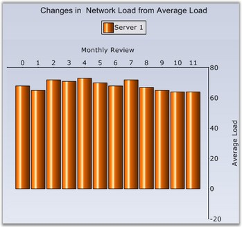

For every chart type there is an implied x-axis and y-axis position and by default all the x-axes and y-axes will be rendered in that corresponding position. You can override this default behavior by setting the OpposedPosition property to true for an axis which will cause it to be rendered in a side opposite to that of the implied position.
|
[C#]
// Will cause the X axis to be rendered on top instead of the default bottom position this.ChartWebControl1.PrimaryXAxis.OpposedPosition = true; // Will cause the Y axis to be rendered on the right instead of the default left position this.ChartWebControl1.PrimaryYAxis.OpposedPosition = true; |
|
[VB.NET]
' Will cause the X axis to be rendered on top instead of the default bottom position Me.ChartWebControl1.PrimaryXAxis.OpposedPosition = True ' Will cause the Y axis to be rendered on the right instead of the default left position Me.ChartWebControl1.PrimaryYAxis.OpposedPosition = True |
The above code snippet will place both the x and y-axes in the position opposite to their default implied position.

Figure 243: Chart displaying Opposed X and Y Axes
You can similarly set this property on any custom ChartAxis that you might add to the chart. Using multiple axes in a chart is described in this topic: Multiple Axes.
The OpposedPosition along with Inversed setting could be useful for implementing charts for right-to-left cultures.